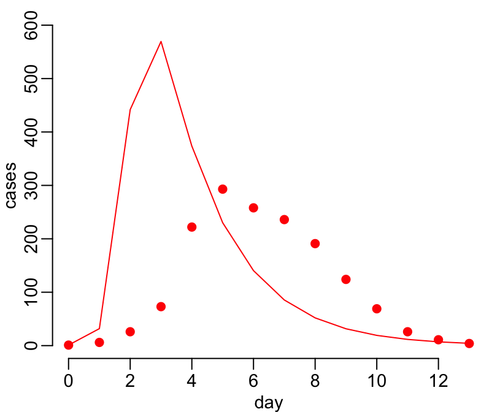
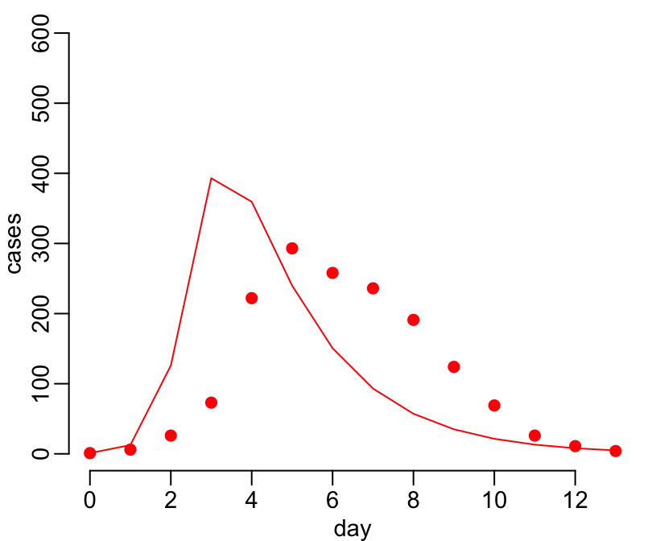
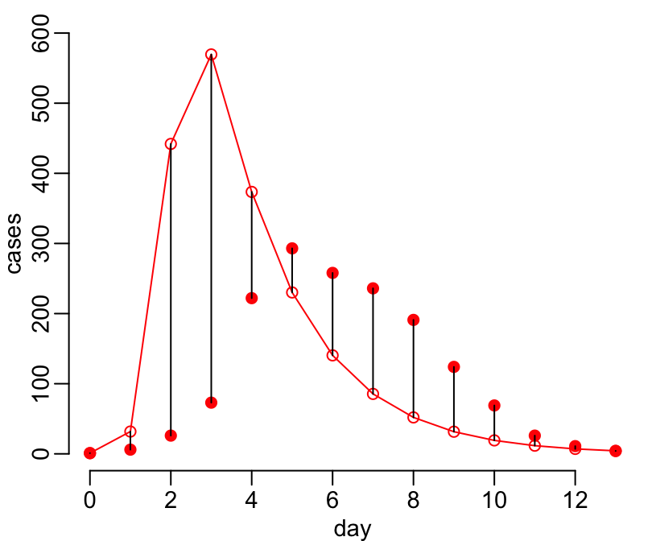
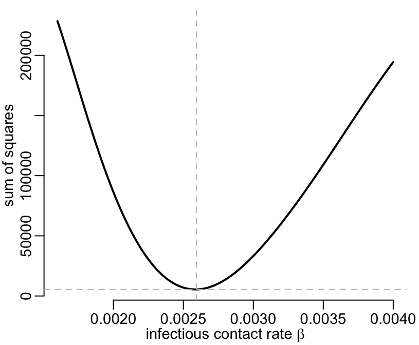
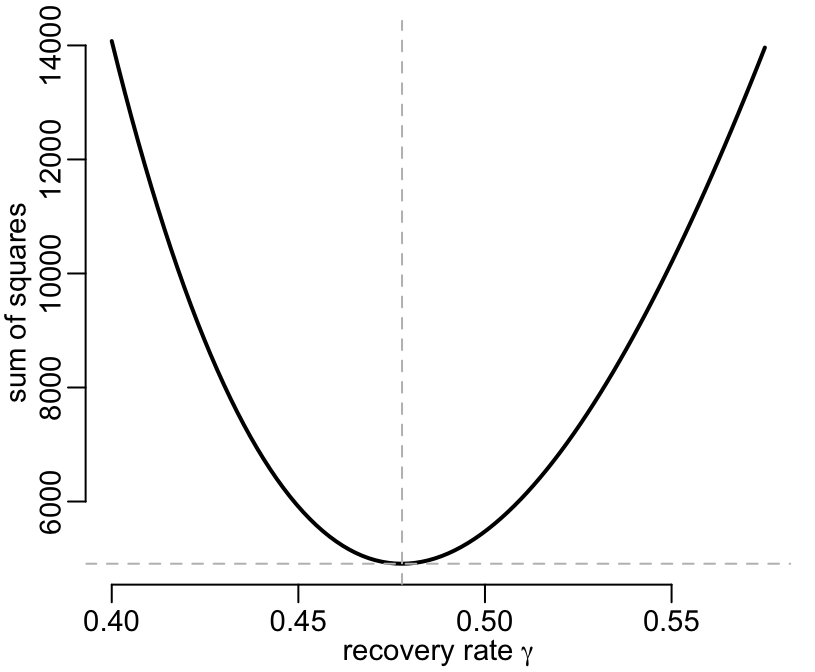
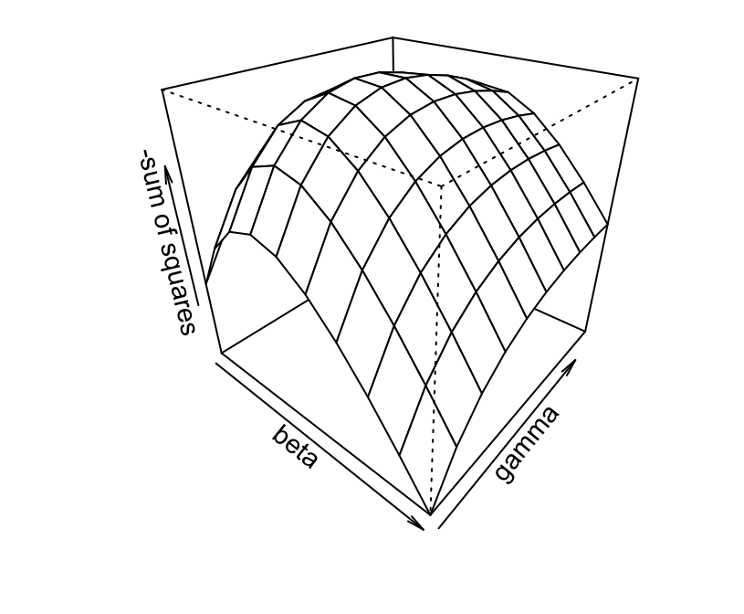
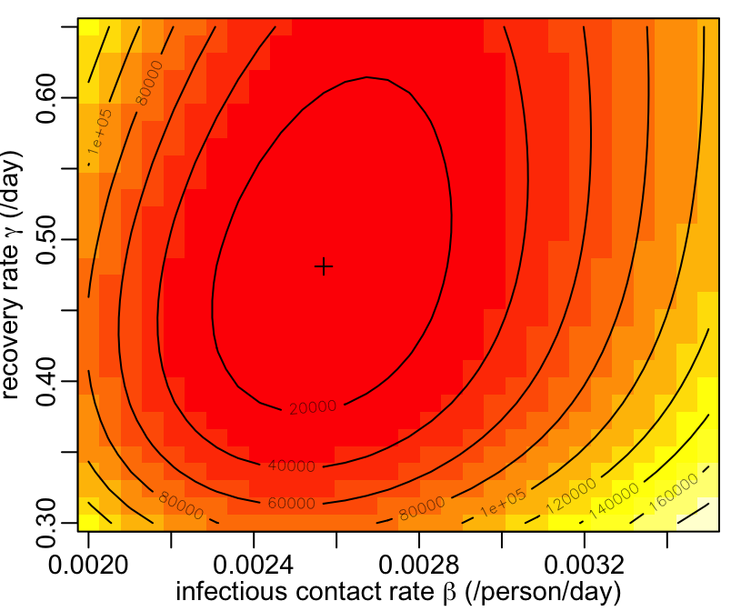
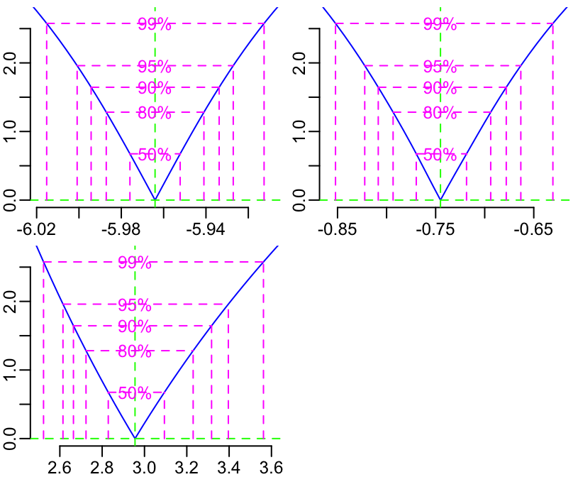
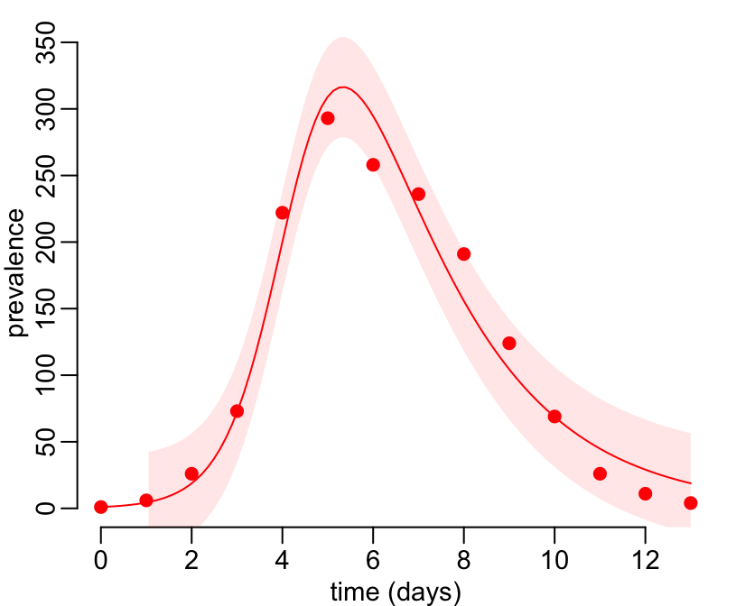
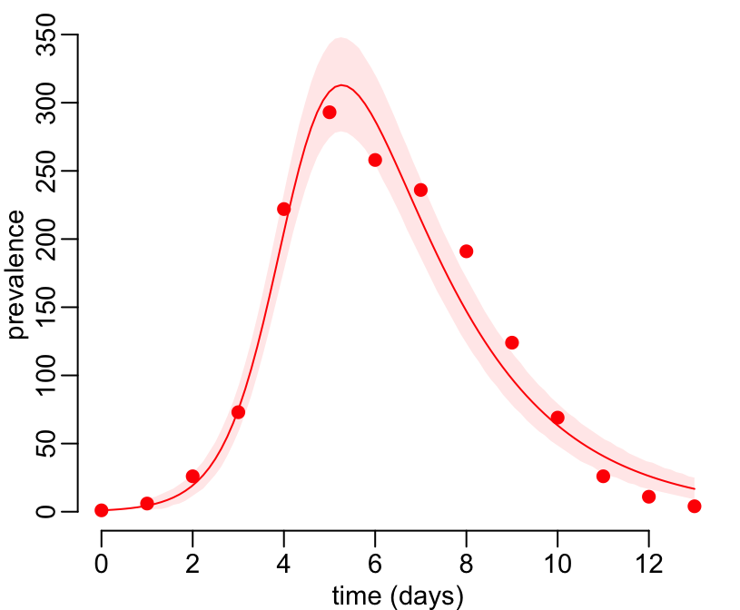

In order to do this tutorial, you need the simulator you wrote at the end of the SIR models tutorial. Here it is again:
sir_1 <- function(beta, gamma, S0, I0, R0, times) {
require(deSolve) # for the "ode" function
# the differential equations:
sir_equations <- function(time, variables, parameters) {
with(as.list(c(variables, parameters)), {
dS <- -beta * I * S
dI <- beta * I * S - gamma * I
dR <- gamma * I
return(list(c(dS, dI, dR)))
})
}
# the parameters values:
parameters_values <- c(beta = beta, gamma = gamma)
# the initial values of variables:
initial_values <- c(S = S0, I = I0, R = R0)
# solving
out <- ode(initial_values, times, sir_equations, parameters_values)
# returning the output:
as.data.frame(out)
}Let’s use some flu data. Context: flu epidemic in an English boys schoolboard (763 boys in total) from January 22nd, 1978 (day 0) to February 4th, 1978 (day 13). These data are on the form of a text file on the internet [here](https://raw.githubusercontent.com/choisy/DMo2019/master/data/flu.txt“,”flu.txt). You can copy these data and paste them into a local file “flu.txt” and then load them into R as so:
flu <- read.table("flu.txt", header = TRUE)If you want to download the data directly from the command line, you can do so as:
download.file("https://raw.githubusercontent.com/choisy/DMo2019/master/data/flu.txt", "flu.txt")
flu <- read.table("flu.txt", header = TRUE)But you can actually do all at once as so:
flu <- read.table("https://raw.githubusercontent.com/choisy/DMo2019/master/data/flu.txt", header = TRUE)Whatever the way you do it, you’ll this at the end:
flu## day cases
## 1 0 1
## 2 1 6
## 3 2 26
## 4 3 73
## 5 4 222
## 6 5 293
## 7 6 258
## 8 7 236
## 9 8 191
## 10 9 124
## 11 10 69
## 12 11 26
## 13 12 11
## 14 13 4Plot the points of the flu data set and use the sir_1() function to visually compare the model’s predictions and the data points:
with(flu, plot(day, cases, pch = 19, col = "red", ylim = c(0, 600)))
predictions <- sir_1(beta = 0.004, gamma = 0.5, S0 = 999, I0 = 1, R0 = 0, times = flu$day)## Loading required package: deSolvewith(predictions, lines(time, I, col = "red"))
Write a function that takes parameters values as inputs and draws the figure as an output. Play with that function to see how changing the values of parameters can bring the model’s predictions closer to the data points.
model_fit <- function(beta, gamma, data, N = 763, ...) {
I0 <- data$cases[1] # initial number of infected (from data)
times <- data$day # time points (from data)
# model's predictions:
predictions <- sir_1(beta = beta, gamma = gamma, # parameters
S0 = N - I0, I0 = I0, R0 = 0, # variables' intial values
times = times) # time points
# plotting the observed prevalences:
with(data, plot(day, cases, ...))
# adding the model-predicted prevalence:
with(predictions, lines(time, I, col = "red"))
}Let’s play!
model_fit(beta = 0.004, gamma = 0.5, flu, pch = 19, col = "red", ylim = c(0, 600))
What are the effects of increasing or decreasing the values of the transmission contact rate (\(\beta\)) and the recovery rate (\(\gamma\)) on the shape of the epi curve?
This is our model’s predictions:
predictions <- sir_1(beta = 0.004, gamma = 0.5, S0 = 999, I0 = 1, R0 = 0, times = flu$day)
predictions## time S I R
## 1 0 999.0000000 1.000000 0.000000
## 2 1 963.7055761 31.798299 4.496125
## 3 2 461.5687749 441.915745 96.515480
## 4 3 46.1563480 569.504176 384.339476
## 5 4 7.0358807 373.498313 619.465807
## 6 5 2.1489407 230.129339 767.721720
## 7 6 1.0390927 140.410850 858.550058
## 8 7 0.6674074 85.444792 913.887801
## 9 8 0.5098627 51.944975 947.545162
## 10 9 0.4328913 31.565149 968.001960
## 11 10 0.3919173 19.176683 980.431400
## 12 11 0.3689440 11.648910 987.982146
## 13 12 0.3556517 7.075651 992.568698
## 14 13 0.3478130 4.297635 995.354552And we want to compare these model’s predictions with real prevalence data:
flu## day cases
## 1 0 1
## 2 1 6
## 3 2 26
## 4 3 73
## 5 4 222
## 6 5 293
## 7 6 258
## 8 7 236
## 9 8 191
## 10 9 124
## 11 10 69
## 12 11 26
## 13 12 11
## 14 13 4One simple way to do so is to compute the “sum of squares” as below:
sum((predictions$I - flu$cases)^2)## [1] 514150.7Which is the squared sum of the lengths of vertical black segments of the figure below:
# the observed prevalences:
with(flu, plot(day, cases, pch = 19, col = "red", ylim = c(0, 600)))
# the model-predicted prevalences:
with(predictions, lines(time, I, col = "red", type = "o"))
# the "errors":
segments(flu$day, flu$cases, predictions$time, predictions$I)
Write a function that takes parameters values and a data set as inputs and returns the sum of squares as below:
ss <- function(beta, gamma, data = flu, N = 763) {
I0 <- data$cases[1]
times <- data$day
predictions <- sir_1(beta = beta, gamma = gamma, # parameters
S0 = N - I0, I0 = I0, R0 = 0, # variables' intial values
times = times) # time points
sum((predictions$I[-1] - data$cases[-1])^2)
}ss(beta = 0.004, gamma = 0.5)## [1] 194402.6Let’s use this function for several possible values of \(\beta\):
beta_val <- seq(from = 0.0016, to = 0.004, le = 100)
ss_val <- sapply(beta_val, ss, gamma = 0.5)The minimum value of the sum of squares is
min_ss_val <- min(ss_val)
min_ss_val## [1] 5475.694The estimate of the infectious contact rate is the value of the beta_val vector that corresponds to the minimum value of the sum of squares:
beta_hat <- beta_val[ss_val == min_ss_val]
beta_hat## [1] 0.002593939Visually, it gives something like this:
plot(beta_val, ss_val, type = "l", lwd = 2,
xlab = expression(paste("infectious contact rate ", beta)),
ylab = "sum of squares")
# adding the minimal value of the sum of squares:
abline(h = min_ss_val, lty = 2, col = "grey")
# adding the estimate of beta:
abline(v = beta_hat, lty = 2, col = "grey")
Do the same for the recovery rate \(\gamma\):
gamma_val <- seq(from = 0.4, to = 0.575, le = 100)
ss_val <- sapply(gamma_val, function(x) ss(beta_hat, x))
(min_ss_val <- min(ss_val))## [1] 4908.896(gamma_hat <- gamma_val[ss_val == min_ss_val])## [1] 0.4777778plot(gamma_val, ss_val, type = "l", lwd = 2,
xlab = expression(paste("recovery rate ", gamma)),
ylab = "sum of squares")
abline(h = min_ss_val, lty = 2, col = "grey")
abline(v = gamma_hat, lty = 2, col = "grey")
Do it now for the two parameters at the same time, using the functions expand.grid() and persp():
n <- 10 # number of parameter values to try
beta_val <- seq(from = 0.002, to = 0.0035, le = n)
gamma_val <- seq(from = 0.3, to = 0.65, le = n)
param_val <- expand.grid(beta_val, gamma_val)
ss_val <- with(param_val, Map(ss, Var1, Var2))
ss_val <- matrix(unlist(ss_val), n)
persp(beta_val, gamma_val, -ss_val, theta = 40, phi = 30,
xlab = "beta", ylab = "gamma", zlab = "-sum of squares")
And a 2-dimension version using the image() and contour() functions:
n <- 30 # number of parameters values
beta_val <- seq(from = 0.002, to = 0.0035, le = n)
gamma_val <- seq(from = 0.3, to = 0.65, le = n)
# calculating the sum of squares:
param_val <- expand.grid(beta_val, gamma_val)
ss_val <- with(param_val, Map(ss, Var1, Var2))
ss_val <- unlist(ss_val)
# minimum sum of squares and parameters values:
(ss_min <- min(ss_val))## [1] 4843.681ind <- ss_val == ss_min
(beta_hat <- param_val$Var1[ind])## [1] 0.002568966(gamma_hat <- param_val$Var2[ind])## [1] 0.4810345# visualizing the sum of squares profile:
ss_val <- matrix(ss_val, n)
image(beta_val, gamma_val, ss_val,
xlab = expression(paste("infectious contact rate ", beta, " (/person/day)")),
ylab = expression(paste("recovery rate ", gamma, " (/day)")))
contour(beta_val, gamma_val,ss_val, add = TRUE)
points(beta_hat, gamma_hat, pch = 3)
box(bty = "o")
What can you say from this plot on the relationship between the two parameters?
The aim here is to estimate the parameters values more efficiently, with an “intelligent” algorithm instead of exploring many possible values (at random or “exhaustively”). This can be done with the function optim(). Looking at the help of this function, you can see that you need
a vector of initial values for the parameters to be optimized over and
a function to be minimized. This function should take as its first argument a vector of parameters over which minimization is to take place and return one single number (the value of the function, here the sum of squares).
Let’s do this. First thing we need is a function that takes parameters values as an input and return the sum of squares as an output. We already have the ss() function that almost does the job:
ss(beta = 0.004, gamma = 0.5)## [1] 194402.6We just need to write another function around this ss() that will have an input interface that fits the requirement of the optim() function (i.e. having the parameters in one vector argument instead of two separate arguments:
ss2 <- function(x) {
ss(beta = x[1], gamma = x[2])
}Let’s try it:
ss2(c(0.004, 0.5))## [1] 194402.6It works! So now we can feed it to the optim() function, together with some starting values of the parameters to initiate the optimization algorithm:
starting_param_val <- c(0.004, 0.5)
ss_optim <- optim(starting_param_val, ss2)It returns this object, which is a simple list of 5 slots:
ss_optim## $par
## [1] 0.002569418 0.475099614
##
## $value
## [1] 4799.546
##
## $counts
## function gradient
## 75 NA
##
## $convergence
## [1] 0
##
## $message
## NULLand from which you can extract the information you are interested in: the minimum value of the sum of squares:
ss_optim$value## [1] 4799.546and the parameters estimates:
ss_optim$par## [1] 0.002569418 0.475099614Use the methodology shown above to estimate the basic reproductive number R\(_0\). Compare your results with what you can esimate with the EpiEstim and the R0 packages.
bbmle packageA generalisation of the sum of squares idea is the likelihood. You can achieve the same results as above by defining a likelihood function instead of a sum of squares function and maximizing it (instead of minimizing) in order to estimate the parmaters values. You can also use the optim() function for that, as we did on the sum of squares. The bbmle package is built upon this optim() function and offers many more possibilities in terms of maximum likelihood estimation (confidence intervals, likelihood profiles, models comparisons, etc…). Have a look at this package and its tutorials to see how it works.
First we need to define a likelihood function:
mLL <- function(beta, gamma, sigma, day, cases, N = 763) {
beta <- exp(beta) # to make sure that the parameters are positive
gamma <- exp(gamma)
sigma <- exp(sigma)
I0 <- cases[1] # initial number of infectious
observations <- cases[-1] # the fit is done on the other data points
predictions <- sir_1(beta = beta, gamma = gamma,
S0 = N - I0, I0 = I0, R0 = 0, times = day)
predictions <- predictions$I[-1] # removing the first point too
# returning minus log-likelihood:
-sum(dnorm(x = observations, mean = predictions, sd = sigma, log = TRUE))
}Performing the maximum likelihood with the mle2() function of the bbmle package:
library(bbmle) # for "mle2", "coef", "confint", "vcov", "logLik", "profile", "summary", "plot.profile.mle2"## Loading required package: stats4starting_param_val <- list(beta = 0.004, gamma = 0.5, sigma = 1)
estimates <- mle2(minuslogl = mLL, start = lapply(starting_param_val, log),
method = "Nelder-Mead", data = c(flu, N = 763))A summary of the estimates:
summary(estimates)## Maximum likelihood estimation
##
## Call:
## mle2(minuslogl = mLL, start = lapply(starting_param_val, log),
## method = "Nelder-Mead", data = c(flu, N = 763))
##
## Coefficients:
## Estimate Std. Error z value Pr(z)
## beta -5.964048 0.017412 -342.517 < 2.2e-16 ***
## gamma -0.745078 0.037571 -19.831 < 2.2e-16 ***
## sigma 2.955300 0.196050 15.074 < 2.2e-16 ***
## ---
## Signif. codes: 0 '***' 0.001 '**' 0.01 '*' 0.05 '.' 0.1 ' ' 1
##
## -2 log L: 113.7402The point estimates (we need to back transform):
exp(coef(estimates))## beta gamma sigma
## 0.002569489 0.474697037 19.207487576The confidence interval (back transformation too):
exp(confint(estimates))## 2.5 % 97.5 %
## beta 0.002476587 0.002666221
## gamma 0.439434199 0.515227420
## sigma 13.665889066 29.856687129The variance-covariance matrix of the parameters:
vcov(estimates)## beta gamma sigma
## beta 0.0003031921 1.736696e-04 1.019810e-05
## gamma 0.0001736696 1.411559e-03 -5.817817e-05
## sigma 0.0000101981 -5.817817e-05 3.843550e-02The value of the minus log-likelihood:
-logLik(estimates)## 'log Lik.' 56.87009 (df=3)The likelihood profiles:
prof <- profile(estimates)
plot(prof, main = NA)
A figure comparing the data with the fitted model:
N <- 763 # total population size
time_points <- seq(min(flu$day), max(flu$day), le = 100) # vector of time points
I0 <- flu$cases[1] # initial number of infected
param_hat <- exp(coef(estimates)) # parameters estimates
# model's best predictions:
best_predictions <- sir_1(beta = param_hat["beta"], gamma = param_hat["gamma"],
S0 = N - I0, I0 = I0, R0 = 0, time_points)$I
# confidence interval of the best predictions:
cl <- 0.95 # confidence level
cl <- (1 - cl) / 2
lwr <- qnorm(p = cl, mean = best_predictions, sd = param_hat["sigma"])
upr <- qnorm(p = 1 - cl, mean = best_predictions, sd = param_hat["sigma"])
# layout of the plot:
plot(time_points, time_points, ylim = c(0, max(upr)), type = "n",
xlab = "time (days)", ylab = "prevalence")
# adding the predictions' confidence interval:
sel <- time_points >= 1 # predictions start from the second data point
polygon(c(time_points[sel], rev(time_points[sel])), c(upr[sel], rev(lwr[sel])),
border = NA, col = adjustcolor("red", alpha.f = 0.1))
# adding the model's best predictions:
lines(time_points, best_predictions, col = "red")
# adding the observed data:
with(flu, points(day, cases, pch = 19, col = "red"))
Let’s now try another version of the model where we assume that the prevelences are Poisson distributed instead of normally distributed.
Modifying the likelihood function:
#mLL <- function(beta, gamma, sigma, day, cases, N = 763) {
mLL_pois <- function(beta, gamma, day, cases, N = 763) {
beta <- exp(beta) # to make sure that the parameters are positive
gamma <- exp(gamma)
# sigma <- exp(sigma)
I0 <- cases[1] # initial number of infectious
observations <- cases[-1] # the fit is done on the other data points
predictions <- sir_1(beta = beta, gamma = gamma,
S0 = N - I0, I0 = I0, R0 = 0, times = day)
predictions <- predictions$I[-1] # removing the first point too
if (any(predictions < 0)) return(NA) # safety
# returning minus log-likelihood:
# -sum(dnorm(x = observations, mean = predictions, sd = sigma, log = TRUE))
-sum(dpois(x = observations, lambda = predictions, log = TRUE))
}Estimating the parameters (2 here instead of 3):
starting_param_val <- list(beta = 0.004, gamma = 0.5)
estimates_pois <- mle2(minuslogl = mLL_pois,
start = lapply(starting_param_val, log),
data = c(flu, N = 763))Point estimates, to compare with the estimates from the previous model:
exp(coef(estimates))## beta gamma sigma
## 0.002569489 0.474697037 19.207487576exp(coef(estimates_pois))## beta gamma
## 0.002606615 0.488037031Confidence intervals, also to compare with the estimates from the previous model:
exp(confint(estimates))## 2.5 % 97.5 %
## beta 0.002476587 0.002666221
## gamma 0.439434199 0.515227420
## sigma 13.665889066 29.856687129exp(confint(estimates_pois))## 2.5 % 97.5 %
## beta 0.002555869 0.002659051
## gamma 0.465921534 0.511233983Variance-covariance:
vcov(estimates_pois)## beta gamma
## beta 1.018070e-04 1.441282e-05
## gamma 1.441282e-05 5.605317e-04A figure:
# points estimates:
param_hat <- exp(coef(estimates_pois))
# model's best predictions:
best_predictions <- sir_1(beta = param_hat["beta"], gamma = param_hat["gamma"],
S0 = N - I0, I0 = I0, R0 = 0, time_points)$I
# confidence interval of the best predictions:
cl <- 0.95 # confidence level
cl <- (1 - cl) / 2
lwr <- qpois(p = cl, lambda = best_predictions)
upr <- qpois(p = 1 - cl, lambda = best_predictions)
# layout of the plot:
plot(time_points, time_points, ylim = c(0, max(upr)), type = "n",
xlab = "time (days)", ylab = "prevalence")
# adding the predictions' confidence interval:
sel <- time_points >= 1 # predictions start from the second data point
polygon(c(time_points[sel], rev(time_points[sel])), c(upr[sel], rev(lwr[sel])),
border = NA, col = adjustcolor("red", alpha.f = 0.1))
# adding the model's best predictions:
lines(time_points, best_predictions, col = "red")
# adding the observed data:
with(flu, points(day, cases, pch = 19, col = "red"))
Comparing the minus log-likelihoods:
-logLik(estimates)## 'log Lik.' 56.87009 (df=3)-logLik(estimates_pois)## 'log Lik.' 68.6638 (df=2)